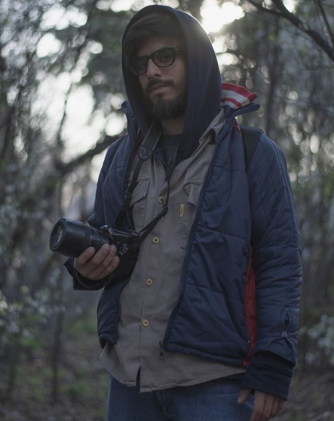

Los fotógrafos de Ojo Patagónico cuentan con una amplia trayectoria en eventos, medios de comunicación y fotografía artística.
Iván Lara se inició en la fotografía desde muy pequeño, dedicándo parte de su vida a la fotografía artística. Más adelante, luego de haberse recibido de productor audiovisual, comenzó a trabajar como camarógrafo para medios locales de Trelew-Chubut. En el año 2021 se mudó a Capital Federal, donde formó parte de varios proyectos audiovisuales con artistas emergentes del movimiento trap y también tuvo colaboraciones con aclamados artistas de la cumbia como Nestor en Bloque.
Jofre Carlos comenzó con la fotografía con su mentor Getaboas, aclamado fotógrafo patagónico. Formó parte del festival de la luz, donde una gran eminencia de la fotografía como Oscar Pintor elogió su trabajo en una amplia muestra. Trabajó en varios eventos de la zona. Actualmente es fotógrafo del Movimiento de los Trabajadores Excluídos (MTE) de la Provincia del Chubut
